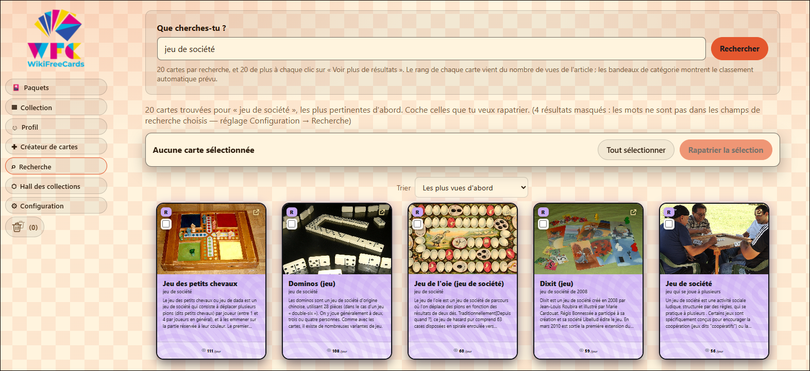
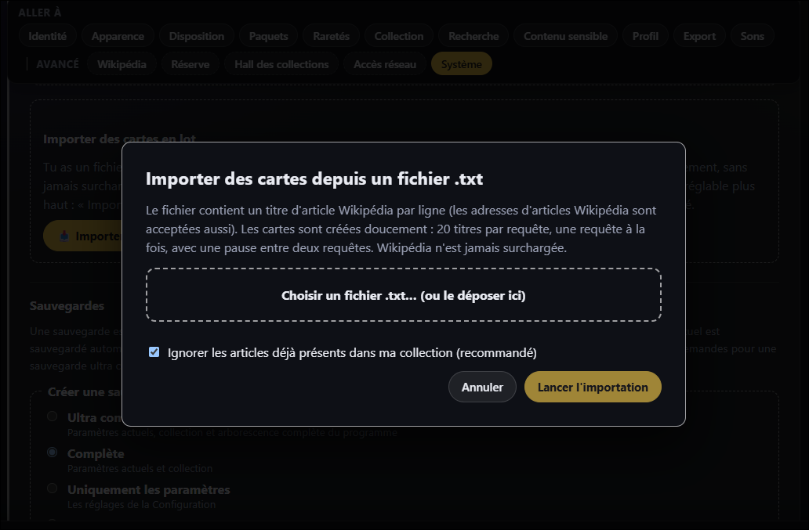
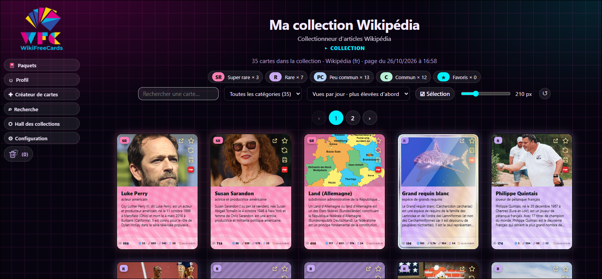
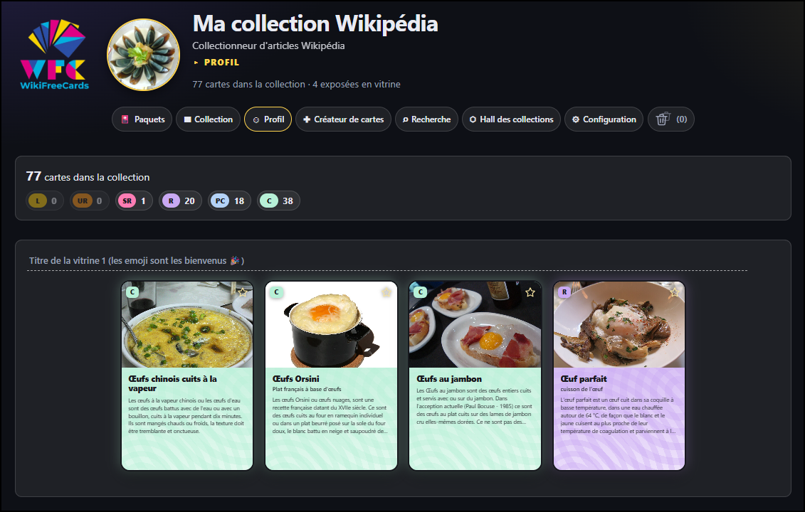

Collectionner
Trouver des cartes, les ranger, les regarder de près et les montrer : tout ce qui fait vivre votre collection au quotidien.
Chercher un sujet précis sur Wikipédia
Les paquets apportent la surprise ; le moteur de recherche permet de viser un sujet. Saisissez un thème, par exemple « jeu de société » : le logiciel affiche 20 cartes, puis 20 de plus à chaque clic sur Voir plus de résultats.
- Le rang de chaque carte est calculé à partir du nombre de vues de l'article.
- Les bandeaux de catégorie montrent à l'avance le classement automatique qui sera appliqué.
- Cochez les cartes qui vous intéressent, puis rapatriez-les dans votre collection en un clic.
- Les résultats se trient, par exemple des plus vus aux moins vus. Les champs pris en compte par la recherche se règlent dans la configuration.


Importer toute une liste d'articles
Vous avez déjà une liste de sujets en tête ? Rassemblez-les dans un simple fichier .txt, un titre d'article Wikipédia par ligne, et importez-le depuis la configuration. Les adresses d'articles Wikipédia sont acceptées aussi.
- Les cartes sont créées en douceur : 20 titres par requête, une requête à la fois, avec une pause entre deux requêtes. Wikipédia n'est jamais surchargée.
- Une option, recommandée, ignore les articles déjà présents dans votre collection.


Votre collection, rangée comme vous l'entendez
La page Collection rassemble toutes vos cartes. Un compteur par rang montre d'un coup d'œil sa composition.
- Recherche par nom et filtre par catégorie.
- Tri, par exemple selon le nombre de vues par jour.
- Taille d'affichage des cartes réglable avec un curseur.
- Mode Sélection pour cocher plusieurs cartes à la fois.
- Favoris marqués d'une étoile, pagination et corbeille.


Des catégories qui se remplissent toutes seules
Comme dans d'autres logiciels du genre, vous pouvez créer vos propres catégories. La différence : chaque catégorie accepte jusqu'à cinq mots-clés, appelés « métas ». À l'ouverture d'un paquet, une nouvelle carte qui contient l'un de ces mots dans son titre ou son sous-titre est classée automatiquement.
Exemple
Une catégorie « Cinéma » associée aux mots acteur, actrice, film, scénariste et cinéma accueillera d'elle-même toutes les nouvelles cartes correspondantes.
Des pré-catégories intelligentes
Des pré-catégories, elles aussi paramétrables, repèrent d'emblée certains types de cartes :
- les cartes en double ;
- les cartes animées ;
- les cartes sans illustration ;
- les cartes « sensibles », par exemple les contenus réservés aux plus de 18 ans.
Une carte, de près
Un clic sur une carte l'affiche en grand. Vous y retrouvez :
- l'illustration de l'article et la lettre du rang, en haut à gauche ;
- le titre, la courte description et le début de l'article ;
- le nombre de vues par jour, plusieurs statistiques sur l'article, ainsi que la date et l'heure d'obtention de la carte. Curieux de savoir si l'article a évolué depuis ? Un clic sur la partie statistique permet, si vous le souhaitez, de mettre à jour les informations de la carte ;
- des boutons pour ouvrir l'article, ajouter la carte aux favoris, changer son illustration et l'exporter.
Exporter et imprimer
Chaque carte peut être exportée au format PNG, PDF ou Word. Les exports PDF et Word sont prévus pour une impression recto verso : de quoi transformer vos cartes préférées en cartes bien réelles.

Un profil avec des vitrines
La page Profil vous présente, avec l'image ou la photo de votre choix, et résume votre collection : nombre total de cartes, répartition par rang et, surtout, vos vitrines.
Vous pouvez créer de 1 à 12 vitrines, contenant chacune de 1 à 5 cartes. Donnez-leur un titre (les emoji sont les bienvenus), puis changez ou retirez les cartes exposées quand vous le voulez.


Le Hall des collections
Le Hall des collections permet de visiter les collections que d'autres utilisateurs ont choisi de partager, et de montrer la vôtre. Vous rapatriez les cartes qui vous plaisent ; vos visiteurs peuvent faire de même chez vous, tout aussi simplement.
Le partage s'arrête là, volontairement : ni demandes d'ami, ni messagerie, ni monnaie virtuelle, ni enchères.
Les échanges passent par le réseau Tor, sans compte ni mot de passe. Comment fonctionne le partage